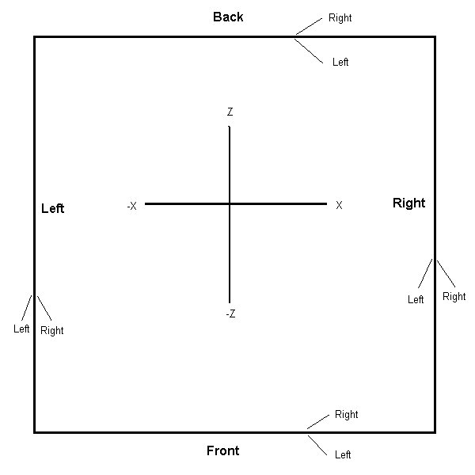
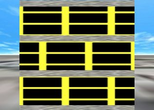
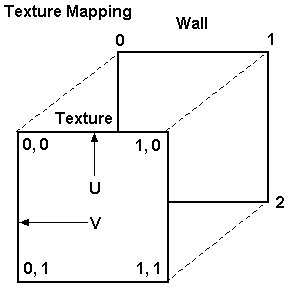

Skyscraper 1.6
Building Design Guide
Copyright (C)2005-2010 Ryan Thoryk
This document describes how to create your own buildings for the Skyscraper simulator, and also describes all of the available commands. Please note that the commands and syntax will change frequently during the simulator's development, and formatting will be cleaned up to make the code more readable. A graphical building designer is planned, which will generate these script files based on simplified CAD-like floorplan layouts, and will also allow the user to view the building in 3D as it's being created.
1. Starting a new building
Buildings are stored in text files in Skyscraper's buildings folder, usually at c:\program files\skyscraper\buildings on Windows, or in the "buildings" directory on Unix. The filenames end in BLD, and so you need to make sure your text file ends with ".bld" and not ".txt". To create a new building, first open up a text editor, and read the instructions below. When you're finished, save it into the buildings folder shown above, as something like "mybuilding.bld". The building will appear in Skyscraper's buildings list the next time you run it. A simplistic building is included for you to get a good idea of the overall format of a typical building data file. You might also want to open one of the other buildings that come with Skyscraper ("Triton Center.bld", "Glass Tower.bld", etc) for examples on the more advanced functions. Please note that the script syntax will change in the future.
2. General Stuff
1. Comments
To add a comment to your file, simply put the # symbol right
before your comment. For example:
# This is a comment
It's a good idea to use comment markers to add a title header
at the top of your building file. The Triton Center file has this header:
#The Triton Center
#Copyright ©2003-2010 Ryan Thoryk
2. Variables
Variables are marked with percent signs (%), and most system
variables will be described later. There are 256 user variables (0-255) which
can be set using the Set command:
Set 2 = 100
and then can be used later:
Height = %2%
3. IF statements
Basic IF statements can be made, with the following syntax:
if[expression] command
Available signs are = (equals), > (greater than), < (less than), ! (is not), & (and) and | (or). Expressions can also be enclosed in parenthesis. Note that the IF statement only works with the current line, and does not currently support multiple lines within an IF block, an "else" statement, or nesting.
For example, to set the height to 9.5 if the floor number is
less than 82:
if[%floor% < 82] Height
= 9.5
This example shows a complex expression:
if[%floor% < 82 &
(%height% = 3 | %height% = 5)] Height = 9.5
In the above example, the statement will be true if the floor
value is less than 82 and if the height value is either 3 or 5.
4. Inline calculations
Values can be calculated inline by using the following math
operators:
+ (plus), - (minus), / (divide), and * (multiply).
They can be used anywhere in the data file. Here's an example
of one being used with the Set command:
Set 1 = %floorheight% + 10
Parenthesis are also supported, for grouped operations. Here's
an example of a complex math expression:
Set 5 = %height% + (%interfloorheight%
* (4 / %altitude%))
5. Object parameters from outside floor sections
Information about a certain floor can be obtained elsewhere in the script, by referencing the floor in this manner:
Floor(number).parameter
Available parameters are Altitude, Height, FullHeight and InterfloorHeight. Note that this function must only be called after the specified floor has been created.
Example:
Set 1 = Floor(5).Altitude
6. Global commands or functions that can be used anywhere in the script
In this section, Destobject refers to the destination object to create other objects in. It can be either floor (only available within a Floor section), external, landscape, or buildings (more will come soon). When the command is used inside a Floor section, and Destobject is not floor, the altitude of the current floor will be used, and altitude/y values specified in these commands will be offsets of that altitude.
a. AddTriangleWall - adds a textured triangular wall
Syntax: AddTriangleWall destobject,
name, texturename, x1, y1, z1, x2,
y2, z2, x3, y3, z3, tw,
th
Example: AddTrianglewall
external, My Triangle, brick, 0, 0, 0, 0, 10, 0, 0, 0, 10, 0, 0
b. AddWall - adds a textured wall
Syntax: AddWall destobject,
name, texturename, thickness, x1, z1, x2,
z2, height1, height2, altitude1, altitude2,
tw, th
Example: AddWall buildings,
Wall1, brick, 0.5, -10, -10, 10, 10, 15, 15, Floor(2).Altitude, Floor(2).Altitude,
0, 0
The command's parameters are the same as the Floor section's AddWall command.
c. AddFloor - adds a textured floor
Syntax: AddFloor destobject,
name, texturename, thickness, x1, z1, x2,
z2, altitude1, altitude2, tw, th
The command's parameters are the same as the Floor section's AddFloor command.
d. AddGround - adds a tile-based ground
Syntax: AddGround name,
texturename, x1, z1, x2, z2, altitude,
tile_x, tile_y
Example: AddGround
AddGround Ground, Downtown, -158400, -158400, 158400, 158400, 0, 7920, 7920
This command is mainly for creating large ground sections, since using the AddFloor function with a large amount of texture tiling causes interference problems. The X and Z values specify the total size of the ground, and the tile_x and tile_y specify the size of each tile square to create. For example, if the ground is 10,000 feet wide, and tile_x and tile_y are both 1000, then 100 total tiles will be created; 10 wide and 10 deep. In the example above 7920 is 1/40 of the total width (316800 which is 158400 * 2), so the tile grid will be 40x40 tiles.
e. CreateWallBox - creates 4 walls (box) at
the specified coordinate locations
Syntax: CreateWallBox destobject,
name, texturename, x1, x2, z1, z2,
height, voffset, tw, th, inside, outside, top,
bottom
Example: CreateWallBox external,
My Box, brick, -10, 10, -10, 10, 15, 0, 0, 0, true, true, true, true
The parameters in this command are very similar to the ones in the AddWall command shown below in the Floor section, except that a box is created instead of a single wall. Inside and outside determine if the wall should be visible from the inside/outside, and top and bottom determine if the top and bottom walls should be drawn.
f. CreateWallBox2 - creates 4 walls (box) at
a specified central location
Syntax: CreateWallBox2 destobject,
name, texturename, centerx, centerz, widthx,
lengthz, height, voffset, tw, th,
inside, outside, top, bottom
Example: CreateWallBox2 external,
My Box, brick, 0, 0, 10, 10, 15, 0, 0, 0, false, true, false, false
The parameters are the same as the above command, except that
centerx and centerz define the center of the box, and widthx
and lengthz specify the width and length off of the center.
g. AddCustomWall - creates a custom polygon (wall, floor,
etc) with any number of vertex points. For example, a triangular wall has
3 vertex points, and a standard wall has 4. This function allows at least
3 vertices.
Syntax: AddCustomWall destobject,
name, texturename, x1, y1, z1, x2, y2, z2, x3, y3, z3, ..., tw, th
Example: AddCustomWall external,
My Wall, brick, 0, 0, 0, 0, 10, 0, 10, 10, 0, 10, 0, 10, 0, 0
h. AddShaft - creates a shaft at a specified
location and floor range
Syntax: AddShaft number,
type, centerx, centerz, startfloor, endfloor
Example: AddShaft 1, 2, 10,
10, 0, 9
The number parameter specifies the shaft number to create. Type is either 1 for a pipe/utility shaft, 2 for an elevator shaft, and 3 for a stairwell shaft. This command just tells the simulator the area that the shaft will take up, and does not create the actual shaft walls. Later on when you create the walls/floors for the shaft, make sure that you make a floor at the very bottom and very top of the shaft (they can extend beyond the walls).
i. CreateStairwell - creates a stairwell at
a specified location and floor range
Syntax: CreateStairwell number,
centerx, centerz, startfloor, endfloor
Example: CreateStairwell
1, 10, 10, 0, 9
The number parameter specifies the stairwell number to create. This command just tells the simulator the area that the stairwell will take up, and does not create the actual walls.
j. WallOrientation - changes the internal wall
orientation parameter, which is used for determining the wall thickness boundaries
in relation to their coordinates.
Syntax: WallOrientation =
direction
Example: WallOrientation
= left
The direction parameter can either be left, center, or right. Center is default. For example, if center is used, than half of the wall's thickness is to the right (positive) of it's x1/x2 or z1/z2 coordinates, and half is to the left (negative) of the coordinates. If left is used, than the coordinates define the wall's left (negative) edge, and the full thickness is to the right (positive) of those. If right is used, then again the coordinates define the wall's right (positive) edge, and the full thickness is to the left (negative) of those. See this graphic for a good example:

In the graphic above, the large box at the top shows what the X and Z coordinates correspond to. The lower examples show the wall orientation as left or right, and if either the difference in x values or z values is larger.
k. FloorOrientation - changes the internal
floor orientation parameter, which is used for determining the floor thickness
boundaries in relation to their coordinates.
Syntax: FloorOrientation
= direction
Example: FloorOrientation
= bottom
The direction parameter can either be bottom, center, or top. Top is default. For example, if center is used, than half of the floor's thickness is above (positive) it's x1/x2 or z1/z2 coordinates, and half is below (negative) the coordinates. If bottom is used, than the coordinates define the floor's bottom edge, and the full thickness is the top (positive). If top is used, then again the coordinates define the floor's top edge, and the full thickness is the bottom (negative).
l. DrawWalls - specifies which parts of a wall
or floor should be drawn.
Syntax: DrawWalls = MainNegative,
MainPositive, SideNegative, SidePositive, Top, Bottom
Example: DrawWalls = true,
true, false, false, false, false
The example shown is the default setting. This can seem complex, but I'll provide a graphic soon to explain it more easily. MainNegative is the main (that makes up the length if a wall, or the main area if a floor) face on the negative side, MainPositive is the main face on the positive side, SideNegative is the side (the part that is along the thickness) face on the negative side, SidePositive is the side face on the positive side; Top refers to either the top side if a wall, or to the positive X face if a floor; Bottom refers to either the bottom side if a wall, or the negative X face if a floor. In the graphic above in the WallOrientation section, let's say that the large box's difference in x values are larger (meaning that it is horizontal from the left to the right), and that it has the same z values. With that, MainNegative would be the front wall, MainPositive the back, SideNegative the left, SidePositive the right, etc.
m. SetPlanarMapping - sets the planar texture mapper's parameters.
Syntax: SetPlanarMapping Flat, X, Y, Z
Example: SetPlanarMapping false, false, false, true
X, Y and Z reverse the texture mapping per axis, and Flat has it ignore depth. Skyscraper by default uses a simple planar texture mapper, which in simple terms draws the texture in a box around the object. With a basic wall, the top-left of the texture image is mapped to the top left of the wall, the top-right is mapped to the top-right of the wall, etc. If you want the top-right of the texture mapped to the top-left of the wall for example (to flip or change alignment), you'd set X to false. This command is mainly used to change alignment - since the top-left of the texture is mapped to the top-left of the object, that means that textures have a left/top alignment by default. If you change X to true, it'll be right-aligned. If you change Y to true, it'll be bottom-aligned. See this picture for an example:

In the above picture, I tiled a texture (a black box with yellow around it) 2.5 times on width and height. The bottom floor shows the default texture mapping (ReverseExtents false, false, false); you'll notice that it's aligned to the top-left. In the middle one, I set the X value to true (ReverseExtents true, false, false). In the top one, I set the Y value to true (ReverseExtents false, true, false).
m. SetTextureMapping - manually sets UV texture
mapping for all polygons generated after this command; ResetTextureMapping
restores the values to the defaults or previous
Syntax: SetTextureMapping
vertex1, u1, v1, vertex2, u2, v2, vertex3, u3, v3
Example: SetTextureMapping
0, 0, 0, 1, 1, 0, 2, 1, 1
The example shown above is the default value used by the simulator.
This command maps the texture coordinates to the specified 3 vertex indices
- normally a side of a wall will have 4 vertices/sets of coordinates (0 to
3), and by default the first three are used (top left, top right and bottom
right respectively), with the UV coordinates representing the size percentage
of the texture (with 1 being 100%, 0.5 being 50%, etc; normally this would
relate to absolute texture coordinates) - so in the example, texture coordinate
0,0 (top left) is mapped at the first vertex (top left); texture coordinate
1,0 (really "width, 0") being mapped at the second vertex (top right),
and texture coordinate 1,1 (really "width, height") being mapped
to the bottom right. For a standard wall, the valid vertex values are from
0 to 3. If a wall or floor is created with AddCustomWall, and if it has for
example 7 vertex points, the valid values for this command would then be 0
to 6 (but only 3 vertices can be used for mapping purposes). Textures can
also be cropped with this command - for example, to map only a central square
of a texture, you'd use:
SetTextureMapping 0, 0.25,
0.25, 1, 0.75, 0.25, 2, 0.75, 0.75
Here's an easier way to see the example above:
0 -> 0,
0
1 -> 1, 0
2 -> 1, 1
The following diagram shows the mapping described above. Texture location 0,0 is mapped to wall vertex 0, location 1,0 is mapped to vertex 1, etc:

n. SetTextureMapping2 - advanced version of
SetTextureMapping - manually sets UV texture mapping for all polygons generated
after this command; ResetTextureMapping restores the values to the defaults
or previous
Syntax: SetTextureMapping2
v1x, v1y, v1z, u1, v1, v2x, v2y, v2z, u2, v2, v3x, v3y, v3z, u3, v3
Example: SetTextureMapping2
x0, y0, z0, 0, 0, x1, y1, z1, 1, 0, x2, y2, z2, 1, 1
See the above description of SetTextureMapping for a detailed description on texture mapping in general. This command mostly does the same as that command, and the example given is the default command (and is equivalent to the SetTextureMapping example). Instead of just choosing which vertex indices to use like SetTextureMapping, this command lets you create your own texture vertices (sets of coordinates) using coordinates of already-existing vertices. The vertex values that can be used start with an "x", "y" or "z", followed by the vertex index. In the example, the X, Y and Z values of the first vertex are mapped to UV coordinate 0,0 - this is because "x0, y0, z0" was specified. A specification of "x0, y2, z0" will use the X and Z values from vertex 0, but the Y value from vertex 2. This way you can specify coordinates outside of the wall/polygon's range. Here's an easier way to see the example:
x0, y0, z0
-> 0, 0
x1, y1, z1 -> 1, 0
x2, y2, z2 -> 1, 1
o. ResetTextureMapping - resets the texture
mapping parameters to either the default or previous values
Syntax: ResetTextureMapping
= default
Example: ResetTextureMapping
= true
If default is true, the texture mapping values are reset to the default, which is shown above in the SetTextureMapping's example. If default is false, the previous values will be loaded and used.
p. ReverseAxis - reverses the axis that the
difference in altitude/voffset for floors corresponds to. In the AddFloor
command, there are parameters for specifying two different altitudes. By default,
if the altitudes are different, the floor will angle upward/downward along
the Z axis (front/back), but if this is set to true, the floor will angle
along the X axis (left/right).
Syntax: ReverseAxis = value
q. ShaftCut - used in conjunction with a shaft
object - performs a vertical box cut on all floor objects (floors, ceilings,
interfloor, etc) in the specified range.
Syntax: ShaftCut number,
startx, startz, endx, endz, start_voffset, end_voffset
Example: ShaftCut 1, -4,
-3.5, 4, 3.5, 0, 5
Number is the number of the shaft object to work with. Startx, startz, endx, and endz are two sets of coordinates that specify the cut box's start position and end position, relative to the shaft's central position. Start_voffset is the position above the starting floor's altitude to start the cut at, and end_voffset is the position above the ending floor's altitude to end the cut at. The example cuts a box for shaft 1, with a width from -4 to 4, and a length from -3.5 to 3.5, starting at the starting floor's altitude, and ending at 5 feet above the ending floor's altitude.
r. CutStairwell - used in conjunction with
a stairwell object - performs a vertical box cut on all floor objects (floors,
ceilings, interfloor, etc) in the specified range. For the parameters, see
the ShaftCut command.
Syntax: CutStairwell
number, startx, startz, endx, endz, start_voffset, end_voffset
Example: CutStairwell 1,
-4, -3.5, 4, 3.5, 0, 5
s. Isect - the Isect function calculates the
position that a line intersects with a certain object, such as a floor. Since
this is a function, it can be used in-line anywhere.
Syntax: isect(destobject,
objectname, startx, starty, startz, endx, endy, endz)
Example: isect(external,
wall1, 10, 10, 0, -10, 10, 0)
Destobject is the destination object to get the object from (floor, external, landscape, or buildings). Startx, starty, and startz make up the position of the starting position, and endx, endy and endz make up the ending position. The first intersection of the named object is the return value, in "X, Y, Z" format (for example, "10, 1, 3").
t. SetAutoSize - enables or disables texture
autosizing
Syntax: SetAutoSize = AutoWidth,
AutoHeight
Example: SetAutoSize = true,
true
This command will determine if the simulator should automatically size texture appropriately when applied to an object, such as a wall or floor. By default, both are enabled. The AutoWidth and AutoHeight parameters correspond to the "tw" and "th" parameters of the AddWall, AddFloor, etc commands. If any are false, then the parameters specified in the AddWall etc commands multiply the texture values stored with with the Load or LoadRange commands (see below); those values relate to the number of times a texture is tiled; so if AutoHeight is set to False, "2" is specified in the "th" value of AddWall, and the texture's stored "th" value is 1, then the texture will be tiled twice vertically. If either are true, the specified value will me multiplied by the related stored texture value and then autoadjusted.
u. TextureOverride - overrides textures for
the next command. Currently only works with the different AddWall, AddFloor
and AddInterFloor commands.
Syntax: TextureOverride MainNegativeTex,
MainPositiveTex, SideNegativeTex, SidePositiveTex, TopTex, BottomTex
Example: TextureOverride
Metal1, ElevFloor, Metal1, Metal1, Metal1, Metal1
This command will allow you to specify multiple textures for a single command such as AddWall. It will only work on the command immediately after this one. In the above example, the Main Positive side of the object will have the texture "ElevFloor", but all other sides will use "Metal1".
v. ShaftShowFloors - allows a range of floors
to be shown either while inside the specified shaft or while inside an elevator
in the shaft - primarily for glass elevators.
Syntax: ShaftShowFloors ShaftNumber
= range/list
Example: ShaftShowFloors
1 = 1 - 10
In the above example, let's say the user is in an elevator in shaft 1, and is moving upwards from the 2nd floor. In this situation, the 2nd floor will be visible/enabled while they're in the elevator (since it was in the range specified with this command), but when they reach the 11th floor, that floor will be invisible/disabled.
w. ShaftShowOutside - allows objects outside
the building (sky, landscape, etc) to be enabled while the user is both inside
the specified shaft and on one of the specified floors - primarily for glass
elevators.
Syntax: ShowShaftOutside
ShaftNumber = range/list
Example: ShowShaftOutside
1 = 1 - 10
In the above example, if a user is riding an elevator in shaft 1, the outside (sky, landscape, etc) will be enabled while the elevator is on any of the floors from 1 to 10. Once the elevator reaches the 11th floor, the outside will be disabled. This command can be mixed with ShaftShowFloors for mixed atrium/external glass elevators such as the ones in the Glass Tower, where the elevator moves upwards through an indoor atrium, and eventually outside above the atrium. In that situation, the floors that comprise the lower (atrium) section would be specified using ShaftShowFloors (such as 1-10), while the upper (outdoor) floors would be specified using ShaftShowOutside (such as 11-20).
x. ShowFullShaft - determines if an entire
shaft should always be shown, such as a glass elevator track.
Syntax: ShowFullShaft ShaftNumber
= value
Example: ShowFullShaft 1
= true
y. TextureFlip - flips specified textures for
the next command.. Currently only works with the different AddWall, AddFloor
and AddInterFloor commands. The values available are 0 for no flipping, 1
for horizontal flip, 2 for vertical flip, and 3 for both horizontal and vertical.
Syntax: TextureFlip MainNegative,
MainPositive, SideNegative, SidePositive, Top, Bottom
Example: TextureFlip 1, 1,
0, 0, 0, 0
This command will allow you to flip textures on specific parts of a wall or floor created with a command such as AddWall. It will only work on the command immediately after this one. In the above example, the Main Positive and Main Negative sides of the object will have their textures flipped horizontally.
z. Cut - performs a manual box cut on an object
Syntax: Cut destobject,
x1, y1, z1, x2, y2, z2, cutwalls, cutfloors
Example: Cut external,
-5, -5, -5, 5, 5, 5, false, true
The x, y and z values specify the start and end coordinates of the box cut. If cutwalls is true, the function will cut walls; if cutfloors is true, it'll cut floors.
aa. Mount - mounts a zip file in the data directory
into a virtual path.
Syntax: Mount filename,
path
Example: Mount myfile.zip,
mydirectory
In this example, the file myfile.zip located in Skyscraper's data directory will be mounted as "mydirectory", and so a file such as test.jpg inside that zip file will appear as "mydirectory/test.jpg".
ab. AddFloorAutoArea - defines an area that
will automatically enable and disable floors when the user moves within it,
similar to a stairwell
Syntax: AddFloorAutoArea
x1, y1, z1, x2, y2, z2
Example: AddFloorAutoArea
-100, 0, -100, 100, 100, 100
ac. AddSound - creates a user-defined looping
sound at the specified position
Syntax: AddSound name,
filename, x, y, z[, volume, speed, min_distance, max_distance, dir_radiation,
direction_x, direction_y, direction_z]
Example 1: AddSound MySound,
data/sound.wav, 10, 100, 5
Example 2: AddSound
MySound, data/sound.wav, 10, 100, 5, 1, 100, 1, -1, 0, 0, 0, 0
This command creates a custom sound in the specified position, and has a number of optional parameters - the defaults for the optional parameters are shown in Example 2. If you're going to use any of the optional parameters, you must specify them all. X, Y and Z specify the location in 3D space that the sound will be at, volume specifies the volume percentage (with 1.0 being 100%) of the sound, speed determines the playback speed of the sound in percent, min_distance and max_distance set the minimum and maximum distances that the sound can be heard at full volume - by default, minimum is 1 and maximum is -1. Dir_radiation specifies the directional radiation of the sound in radians (more info below), and direction_x, direction_y and direction_z specify the direction of the sound cone.
From the Crystal Space docs on directional radiation:
"The directional radiation applies to sound that are oriented in a particular
direction. This value is expressed in radians and describes the half-angle
of a cone spreading from the position of the source and opening in the direction
of the source. Set this value to 0.0 for an omni-directional sound."
ad. GetWallExtents - the GetWallExtents command
returns the X and Z extents (minimum and maximum values) of a wall, at the
specified altitude. The command will return the results in the ExtentX and
ExtentZ variables.
Syntax: GetWallExtents destobject,
wallname, altitude, get_maximum
Example: GetWallExtents external,
wall1:front, 10, false
Then to use the values:
Example: Set 2 = %extentx%
Destobject is the destination object to get the object from (floor, external, landscape, or buildings). Wallname specifies the name of the wall to get the extents from. Generally this should be in the form of "name:side", but if you leave out the "side" parameter, it'll choose one of the sides from a pre-defined search list. Sides of walls made from any AddWall command generally have "front", "back", "left" and "right" sides. Walls made using AddCustomWall and AddTriangleWall have sides of "0" (front) and "1" (back), so with those you'd specify "name:0" for the front. Altitude specifies the altitude to use for the check - basically it makes a copy of the wall, cuts it down to a line at that altitude, and returns the coordinates of the endpoints. Get_maximum specifies if the function should return the maximum or minimum coordinates. The command will store the results in the ExtentsX and ExtentsZ variables, which can be used anywhere in the script - to get the X result, you'd use %extentx%.
ae. Print - prints the contents of a line to
the console. This command will still convert variables and even math expressions,
and output the results.
Syntax: Print text
Example: Print 1+1
7. END command
The End command tells the software to stop processing the current
script and start the simulation. This is optional.
Example: <end>
8. BREAK command
The Break command triggers a break section in the script processor,
and is used when running the simulator in debug mode. A debugger breakpoint
can be set on the associated line in fileio.cpp, and when this command is
called, the debugger will hit the breakpoint.
Example: <break>
3. The Globals Section
The Globals section contains the general information
about your building. The section starts with this header:
<Globals>
and ends with this footer:
<EndGlobals>
Parameters are placed between those two markers, and look like
this:
Parameter = value
Example:
Name = Triton Center
Parameters:
1. Name - building name, required
Example: Name = My Building
2. Designer - name of building's designer,
optional
Designer = Me
3. Location - location of the building, optional
Location = 100 Main Street
4. Description - Brief description of the
building, optional
Description = A really average
building
5. Version - Version of the building (can be text), optional
Version = 1
6. HorizScale - horizontal scaling modifier; default is 1,
optional
HorizScale = 2 (makes
each horizontal foot become 2 feet, keeping vertical feet at the default)
7. CameraAltitude - camera's normal altitude in feet above
the floor, required
CameraAltitude = 3.2
8. CameraFloor - camera's starting floor, starting with 0
(like Floors command), required
CameraFloor = 0
9. CameraPosition - camera's starting position in X (left/right)
and Z (in/out) feet coordinates, required
Syntax: CameraPosition =
X, Z
CameraPosition = 0, -10
10. CameraDirection - direction the camera's facing on startup,
in X (left/right), Y (up down), and Z (in/out) feet coordinates, required
CameraDirection = 0, 10,
28.8
11. CameraRotation - rotation of the camera
on startup, required
CameraRotation = 0, 0, 0
12. Sky - which skybox texture pack to use.
In the following example, the chosen pack is "noon", and the file
"sky-noon.zip" will be loaded.
Sky = noon
4. The Textures Section
The Textures section loads textures into the simulation and
assigns names to them, for use in the rest of the sections. The section starts
with this header:
<Textures>
and ends with this footer:
<EndTextures>
1. Load - loads a texture
Syntax: Load filename,
name, tile_x, tile_y[, force]
Example: Load data\brick1.jpg,
Brick, 1, 1
This example will load the file brick.jpg and name it Brick. The values tile_x and tile_y are per-texture multipliers. For example, if you set tile_x to 2, and you specify a texture width (tw) of 2 during an AddFloor command later, the tiling value will be 4 (2 times 2), and the texture will be repeated 4 times horizontally. The force value is optional, and if set to false, autosizing will always be disabled for this texture; if set to true, autosizing will always be enabled.
2. LoadRange - loads a numeric
range of textures, and the current number is available in the number
variable (%number%)
Syntax: LoadRange startnumber,
endnumber, filename, name, tile_x, tile_y[,
force]
Example: LoadRange 2, 138,
data\floorindicators\%number%.jpg, Button%number%, 1, 1
This example will load the file 2.jpg and name it Button2, 3.jpg as Button3, and so on. The values tile_x and tile_y are per-texture multipliers. For example, if you set tile_x to 2, and you specify a texture width (tw) of 2 during an AddFloor command later, the tiling value will be 4 (2 times 2), and the texture will be repeated 4 times horizontally. The force value is optional, and if set to false, autosizing will always be disabled for this texture; if set to true, autosizing will always be enabled.
3. AddText - draws text onto a texture - this
only creates a new texture during runtime (in memory), and all changes are
lost when the application shuts down
Syntax: AddText texture_name,
name, font_filename, font_size, text, x1, y1, x2, y2, h_align, v_align, ColorR,
ColorG, ColorB[, force]
Example: AddText Black, Button100,
nimbus_sans.ttf, 47, 100, -1, -1, -1, -1, center, center, 255, 255, 255
With this command, texture_name is the name of the previously loaded texture to draw text onto (loaded with either Load or LoadRange). Name is the name to call this new texture. Font_filename is the filename of the font to use - fonts are in Skyscraper's data/fonts directory. X1, y1, x2, and y2 are coordinate values mainly used to position the text in a boxed area, with the position of 0, 0 (x 0, y 0) being on the top left.. If any value is -1, the dimension of the texture will be used (so in this example, the loaded texture has a size of 128x128 pixels, and so the values are 0, 0, 128, 128). This will place the text in the center of the texture image, but to position it elsewhere, specify the pixel box to place it in. H_align and v_align determine the alignment of the text - for h_align, it can either be "left", "right" or "center", and for v_align either "top", "bottom" or "center". ColorR, ColorG and ColorB determine the color of the text, and the values range from 0 to 255. If all values are 255, the text is white, and if all values are 0, then it's black. The force value is optional, and if set to false, autosizing will always be disabled for this texture; if set to true, autosizing will always be enabled.
4. AddTextRange - similar to LoadRange, but
draws text onto a texture
Syntax: AddText startnumber,
endnumber, texture_name, name, font_filename, font_size, text, x1, y1, x2,
y2, h_align, v_align, ColorR, ColorG, ColorB[, force]
Example: AddText 1, 100,
Black, Button%number%, nimbus_sans.ttf, 47, %number%, -1, -1, -1, -1, center,
center, 255, 255, 255
5. LoadCropped - loads a cropped image.
Syntax: LoadCropped filename,
name, x, y, width, height, tile_x, tile_y[, force]
Example: LoadCropped data\brick1.jpg,
Brick2, 10, 10, 20, 20, 1, 1
This command is similar to the Load command, but loads only a portion of an image. In the above example, the command loads the file data\brick1.jpg as "Brick2", but only loads the portion of the image starting at pixel 10, 10, with a width of 20 pixels and a heigth of 20 pixels. Pixel 0, 0 is on the top left of the image. The force value is optional, and if set to false, autosizing will always be disabled for this texture; if set to true, autosizing will always be enabled.
6. AddOverlay - draws an image on top of another
image
Syntax: AddOverlay texture_name,
overlay_texture_name, name, x, y, width, height, tile_x, tile_y[, force]
Example: AddOverlay Brick1,
Brick2, NewBrick, 25, 25, 50, 50, 1, 1
This command allows multiple textures to be combined into a single texture, by drawing one on top of the other. Texture_name specifies the original source texture name to use (all textures must be loaded beforehand), overlay_texture_name specifies the texture to draw on top of the source texture, and name specifies the name of the new texture. X and Y determine the position to place the top-left of the new image at (since position 0, 0 is the top left of the image), and width and height determine the size in pixels of the overlay texture. In the above example, the "Brick2" texture is drawn on top of the "Brick1" texture, starting at pixel position 25, 25, with a width of 50 and a height of 50. The resulting texture is called "NewBrick". The force value is optional, and if set to false, autosizing will always be disabled for this texture; if set to true, autosizing will always be enabled.
5. The Floor Sections
There are 2 Floor sections available - Floor
and Floors. Floor specifies a single floor, while Floors
specifies a range of floors.
For a single floor, the section would start with this:
<Floor number>
and end with this:
<EndFloor>
For example, a floor section for a lobby would use this:
<Floor 0>
For multiple floors, the section would start with this:
<Floors start
to finish>
and end with this:
<EndFloors>
For example, to work with floors 5-10, you would type:
<Floors 5 to 10>
Floors above ground start with 0 (so a 15-story building would have floors 0-14). Also, floors must be made in the proper order: basement levels must be made first in decending order (-1, -2, -3 etc), and then above-ground floors in ascending order (0, 1, 2, etc).
Variables:
%floor%
- contains the current floor number
%height%
- contains the current floor's ceiling height
%interfloorheight%
- contains the current floor's interfloor height (spacing between floors)
%fullheight%
- contains the current floor's total height, including the interfloor height
Parameters:
1. Name - the name of the current floor, required
Example: Name = Floor %floor%
2. ID - the floor indicator name for the current
floor, such as L (for Lobby), LL (lower level), M (Mezzanine), etc. This is
also used to determine what texture should be loaded for the elevator floor
indicators and floor signs. The texture name would be "Button[ID]"
- so if the ID is 10, the texture name would be "Button10".
ID = %floor%
3. Type - the type of floor the current floor
is. The types are still being defined, but the currently used ones are Basement,
Lobby, Mezzanine, Conference, Office, Service, Skylobby, Hotel, Apartment,
Condominium, Restaurant, Observatory, Recreation, Ballroom, Communications,
and Roof. (Required)
Type = Office
4. Description - description of the current
floor, optional
Description = Offices
5. Height - the floor-to-ceiling height of
the current floor, required
Height = 9.5
6. InterfloorHeight - the height in feet of
the space between floors (below each floor), starting at the floor's altitude,
and ending right below the level's floor; required.
InterfloorHeight = 2.24
7. Altitude - this parameter is optional and
is only recommended if the first level has an interfloor area that needs to
be below ground. If this parameter is not used, the altitude will be calculated
automatically.
Altitude = -2.24
8. Group - group floors together. This is a
list of comma-separated floor numbers (or a range specified with the - symbol)
that should be enabled along with this floor when the user arrives at this
floor. For example, if a 2-story room has a balcony, and the room base and
balcony are separate floors, you would specify the other floor's number in
this parameter.
Examples:
Group = 5
Group = 4, 5
Group = 4 - 10
Commands:
1. Exit - exits the current floor section
2. AddFloor - adds a textured floor with the
specified dimensions to the current floor/level
Syntax: AddFloor name,
texturename, thickness, x1, z1, x2, z2,
voffset1, voffset2, tw, th, isexternal
Example: AddFloor My Floor,
brick, 0.5, -10, -10, 10, 10, 0, 0, 0, 0, False
Voffset1 and voffset2 are the height in feet above the current floor's altitude; tw and th are to size/tile the texture (0 lets the app autosize them), and isexternal determines if the floor is part of the building's external framework, or is part of the current floor (is either True or False). Name is a user-defined name for the object.
3. AddWall - adds a textured wall with the
specified dimensions to the current floor/level
Syntax: AddWall name,
texturename, thickness, x1, z1, x2, z2,
height1, height2, voffset1, voffset2,
tw, th, isexternal
Example: AddWall My Wall,
brick, 0.5, -10, -10, 10, 10, 10, 10, 0, 0, 0, 0, False
Height1 is the wall height in feet at the first coordinate set (x1 and z1), and height2 is for the second set (x2, and z2). Voffset1 is the vertical offset in feet (from the floor's altitude) for the first coordinate set, and voffset2 is for the second set. Tw and th are the texture sizing/tiling multipliers, and isexternal determines if the wall is part of the building's external framework (true) or if it's part of the current floor (false).
4. AddInterfloorFloor - adds a textured floor
below the floor of the current floor/level
Syntax: AddInterfloorFloor
name, texturename, thickness, x1, z1, x2,
z2, voffset1, voffset2, tw, th
Example: AddInterfloorFloor
My IFloor, brick, 0.5, -10, -10, 10, 10, 0, 0, 0, 0
The parameters are the same as the AddFloor command, except the voffset values are the height offset in feet above the current floor's altitude, and not above the base floor level.
5. AddInterfloorWall - adds a textured wall
below the floor of the current floor/level
Syntax: AddInterfloorWall
name, texturename, thickness, x1, z1, x2,
z2, height1, height2, voffset1, voffset2,
tw, th
The parameters are the same as the AddWall command, and the voffset values are the same as the AddInterfloorFloor command.
6. AddShaftFloor - adds a textured floor to
the specified shaft, on the current floor
Syntax: AddShaftFloor number,
name, texturename, thickness, x1, z1, x2,
z2, voffset1, voffset2, tw, th
Example: AddShaftFloor 1,
My Floor, brick, 0.5, -10, -10, 10, 10, 0, 0, 0, 0
The parameters are the same as the AddFloor command, and the number value is the shaft number to use. The x1, z1, x2, and z2 parameters are offsets of the shaft's origin (similar to creating elevator walls and floors)
7. AddShaftWall - adds a textured wall to the
specified shaft, on the current floor
Syntax: AddShaftWall number,
name, texturename, thickness, x1, z1, x2,
z2, height1, height2, voffset1, voffset2,
tw, th
The parameters are the same as the AddWall command, and the number value is the shaft number to use. Also, the x1, z1, x2, and z2 parameters are offsets of the shaft's origin (similar to creating elevator walls and floors)
8. AddStairsFloor - adds a textured floor to
the specified stairwell, on the current floor
Syntax: AddStairsFloor number,
name, texturename, thickness, x1, z1, x2,
z2, voffset1, voffset2, tw, th
Example: AddStairsFloor 1,
My Floor, brick, 0.5, -10, -10, 10, 10, 0, 0, 0, 0
The parameters are the same as the AddFloor command, and the number value is the stairwell number to use
9. AddStairsWall - adds a textured wall to
the specified stairwell, on the current floor
Syntax: AddStairsWall number,
name, texturename, thickness, x1, z1, x2,
z2, height1, height2, voffset1, voffset2,
tw, th
The parameters are the same as the AddWall command, and the number value is the stairwell number to use. Also, the x1, z1, x2, and z2 parameters are offsets of the stairwell's origin (similar to creating elevator walls and floors)
10. ColumnWallBox - creates 4 walls (box) at
the specified coordinate locations, as part of the current floor's columnframe
mesh
Syntax: CreateWallBox destobject,
name, texturename, x1, x2, z1, z2,
height, voffset, tw, th, inside, outside, top,
bottom
Example: CreateWallBox external,
My Box, brick, -10, 10, -10, 10, 15, 0, 0, 0, true, true, true, true
For parameter information, see the CreateWallBox command above. In this command, the default voffset is the floor's altitude.
11. ColumnWallBox2 - creates 4 walls (box)
at a specified central location, as part of the current floor's columnframe
mesh
Syntax: CreateWallBox2 destobject,
name, texturename, centerx, centerz, widthx,
lengthz, height, voffset, tw, th,
inside, outside, top, bottom
Example: CreateWallBox2 external,
My Box, brick, 0, 0, 10, 10, 15, 0, 0, 0, false, true, false, false
For parameter information, see the CreateWallBox2 command above. In this command, the default voffset is the floor's altitude.
12. CallButtonElevators - comma-separated list
of elevators the next created call button set will work with (this must be
specified before CreateCallButtons)
Example: CallButtonElevators
= 1, 2, 3, 4
13. CreateCallButtons - creates a call button
set
Syntax: CreateCallButtons
BackTexture, UpButtonTexture, UpButtonTexture_Lit, DownButtonTexture,
DownButtonTexture_Lit, CenterX, CenterZ, voffset, direction, BackWidth, BackHeight,
ShowBack, tw, th
Example:
Create Marble, CallButtonsUp, CallButtonsUpLit, CallButtonsDown, CallButtonsDownLit,
-10, 0, 4, right, 0.5, 1, true, 1, 1
BackTexture is the texture of the wall plate behind the buttons
UpButtonTexture and DownButtonTexture are the textures used for the buttons themselves (unlit). UpButtonTexture_Lit and DownButtonTexture_Lit specify the lit button textures.
CenterX and CenterZ are the central location of the call button set object
voffset is the altitude offset that the object is above each floor
direction determines the direction the call buttons
face:
'front' means they face towards the front of the building
'back' means they face towards the back of the building
'left' means they face left
'right' means they face right
BackWidth and BackHeight are the width and height of the wall plate
ShowBack determines if the wall plate should be shown, and is either true or false
tw and th are the texture scaling for the wall plate.
The up and down buttons will be automatically created based on the range of the first specified elevator in the CallButtonElevators command (above).
14. AddStairs - creates a custom staircase
at the specified location.
Syntax: AddStairs number,
name, texture, direction, CenterX, CenterZ, width, risersize, treadsize, num_stairs,
voffset, tw, th
Example: AddStairs 1, TestStairs,
Brick, left, 10, 15, 5, 0.5, 0.5, 10, 0, 0, 0
The direction parameter specifies the direction the staircase faces (where the bottom step is), and so if a staircase goes up from left to right, the direction would be left. Width specifies the step width; risersize specifies the height of each step riser (vertical portion); treadsize specifies the length of each step tread/run (horizontal portion); num_stairs specifies the total number of steps to create (including the above landing platform, but not including the base platform). To calculate the length of the staircase, multiply (num_stairs - 1) with treadsize; in the above example, that would be 9 * 0.5. To determine the height of the staircase, multiply num_stairs with risersize. Note that the tread of the top step is not drawn (the top step is the landing platform); therefore for a staircase containing 10 steps, the total staircase width would be comprised of 9 treads (which is why the length calculation used num_stairs minus 1).
15. AddDoor - adds a textured door in the specified
location, and performs a wall cut on that area (this must be called after
the associated wall is created)
Syntax: AddDoor texturename,
thickness, direction, CenterX, CenterZ, width,
height, voffset, tw, th
Direction specifies the direction the door faces (the side in
which the handle is on the left) and also the direction it opens. These are
the values:
1 - faces left, opens left
2 - faces left, opens right
3 - faces right, opens right
4 - faces right, opens left
5 - faces front, opens front
6 - faces front, opens back
7 - faces back, opens back
8 - faces back, opens front
16. AddStairsDoor - adds a textured door for
the specified stairwell, in a location relative to the stairwell's center.
This also performs a wall cut on that area (this must be called after the
associated wall is created)
Syntax: AddStairsDoor
number, texturename, thickness, direction, CenterX, CenterZ,
width, height, voffset, tw, th
Number specifies the stairwell number. Direction specifies the direction the door faces and also the direction it opens. For values of this, look at the AddDoor command above.
17. AddDirectionalIndicator - creates a single
elevator directional indicator/lantern on the current floor (similar to the CreateCallButtons
command)
Syntax: AddDirectionalIndicator
Elevator, Relative, Single, Vertical, BackTexture, UpTexture, UpTextureLit, DownTexture,
DownTextureLit, CenterX, CenterZ, voffset, direction, BackWidth, BackHeight,
ShowBack, tw, th
Example:
AddDirectionalIndicator 1, true, false, true, Metal, UpLight, UpLightOn, DownLight, DownLightOn,
-3, -4.162, 6, front, 0.5, 1, true, 0, 0
This command will create a directional indicator on the current floor (only if the elevator serves it). It'll also automatically create the up and down lights depending on the floor.
Elevator specifies the elevator to create the indicators for.
Relative determines if the X and Z coordinates are relative to the elevator's origin (center) or not.
Single determines if a single indicator light should be created instead of two. If this is true, the unlit texture is specified in UpLight, and the DownLight value is ignored.
Vertical determines if the two lights should be vertically separated (true), or horizontally separated (false)
BackTexture is the texture of the wall plate behind the lights
UpTexture and DownTexture are the textures used for the lights themselves, and the "Lit" texures are the ones to show when the light is on. DownTexture is ignored if Single is true.
CenterX and CenterZ are the central location of the indicators
voffset is the altitude offset that the object is above each floor
direction determines the direction the indicators face:
'front' means they face towards the front of the building
'back' means they face towards the back of the building
'left' means they face left
'right' means they face right
BackWidth and BackHeight are the width and height of the wall plate
ShowBack determines if the wall plate should be shown, and is either true or false
tw and th are the texture scaling for the wall plate.
18. AddShaftDoor - creates shaft elevator doors
on the current floor only
Syntax: AddShaftDoor
elevator, number, lefttexture, righttexture, tw, th
The AddShaftDoor command creates working shaft elevator doors on the current floor only - the other command, AddShaftDoors (in the elevator section) creates all shaft doors in a single command. This command is useful for specifying different textures for shaft doors depending on the floor, and also for only creating shaft doors on one side if an elevator serves a specific floor. The SetShaftDoors command in the elevator section must be used before using this command. Parameters such as width, height, and direction are taken from the AddDoors command (so the regular elevator doors need to be created first). These doors should be moved slightly away from the elevator doors (to separate them both). Also, this command cuts any shaft walls that are within the door area (and so this must be called after the shaft walls are created). Number specifies the number of the door to create (related to the Doors command) - if the elevator only has one door, or if the Doors command was not used, specify 1 here.
19. AddFloorIndicator - creates a floor indicator
associated with a specific elevator
Syntax: AddFloorIndicator
elevator, relative, texture_prefix, direction, CenterX, CenterZ, width, height, voffset
The AddFloorIndicator command creates a floor indicator at the position specified by CenterX and CenterZ, associated with the elevator specified by elevator. Direction is the direction the indicator faces, and can be either "left", "right", "front" or "back". Relative determines if the CenterX and CenterZ values are relative of the elevator's center or not. This command can be given multiple times to create multiple indicators. Texture_prefix is the base name of the texture to load when displaying a floor ID; for example if the indicator is on floor 3, and you specify a prefix of "Button", it'll load the "Button3" texture.
20. Cut - performs a manual box cut on an area
within the current floor
Syntax: Cut x1, y1, z1, x2,
y2, z2, cutwalls, cutfloors
Example: Cut -5, -5,
-5, 5, 5, 5, false, true
The x, y and z values specify the start and end coordinates of the box cut. The Y values are relative to the current floor's altitude.. If cutwalls is true, the function will cut walls; if cutfloors is true, it'll cut floors.
21. AddFillerWalls - helper function to add
fillers around a door's cut location. When a door is created, the wall in
it's location is cut to provide space; after the cut, the sides are open (if
the wall has thickness) - this creates a covering wall on each side and a
floor above the door frame to fill the area.
Syntax: AddFillerWalls texture,
thickness, CenterX, CenterZ, width, height, voffset, direction, tw, th
Example: AddFillerWalls
ConnectionWall, 0.5, -10, 0, 3.5, 8, 0, true, 0, 0
The parameters in this function are similar to the related door's parameters. Direction is either true if the door faces the front/back (width is along the X axis), or false if the door faces left/right (width is along the Z axis).
22. AddSound - creates a user-defined looping
sound at the specified position
Syntax: AddSound name,
filename, x, y, z[, volume, speed, min_distance, max_distance, dir_radiation,
direction_x, direction_y, direction_z]
Example 1: AddSound MySound,
data/sound.wav, 10, 100, 5
Example 2: AddSound
MySound, data/sound.wav, 10, 100, 5, 1, 100, 1, -1, 0, 0, 0, 0
For information on the parameters, see the AddSound command in the Globals section. The only difference here is that the Y value is relative of the floor's base (altitude plus interfloor height).
6. The Elevator Section
The Elevator section allows you to create elevators for your building. Elevators are numbered, starting with 1. Parameters that have defaults listed are optional.
The section headers and footers are similar to the ones in the
Floor section.
To specify a single elevator, you would type something like:
<Elevator 1>
and end it with:
<EndElevator>
For a range of elevators, you would use something like:
<Elevators 2 to 10>
and end with:
<EndElevators>
Variables:
%elevator% - number of the current elevator
Parameters:
1. Name - sets the name of the elevator
Example: Name = Service Elevator
2. Speed - maximum speed of the elevator, in
feet per second
Example: Speed = 20
3. Acceleration - acceleration speed of the
elevator, in feet per second
Example: Acceleration = 0.015
4. Deceleration - deceleration speed of the
elevator, in feet per second
Example: Deceleration = 0.0075
5. OpenSpeed - open/close speed of the elevator
doors. This must be specified after the CreateElevator command.
Syntax: OpenSpeed doornumber
= value
Example: OpenSpeed 1 = 0.2
6. ServicedFloors - a comma-separated list
of floors this elevator services. Ranges can also be specified by putting
a "-" between the numbers
Example: ServicedFloors =
0, 5, 6, 7-30, 31
7. AssignedShaft - the shaft number this elevator
is in
Example: AssignedShaft =
1
8. DoorTimer - the length of time (in milliseconds)
that the elevator doors should stay open before automatically closing. The
default is 5000, or 5 seconds. This must be specified after the CreateElevator
command.
Syntax: DoorTimer doornumber
= value
Example: DoorTimer 1 = 10000
9. OpenSound - the sound file to play when
the elevator doors open. Default is elevatoropen.wav. This must be
specified after the CreateElevator command.
Syntax: OpenSound doornumber
= filename
Example: OpenSound 1 = open.wav
10. CloseSound - the sound file to play when
the elevator doors close. Default is elevatorclose.wav. This must
be specified after the CreateElevator command.
Syntax: CloseSound doornumber
= filename
Example: CloseSound 1 = close.wav
11. CarStartSound - the sound file to play
when the elevator starts moving/speeds up. By default no sound is played.
Example: CarStartSound = start.wav
12. CarMoveSound - the sound file to play while
the elevator is moving. This file is automatically looped by the simulator.
By default no sound is played.
Example: CarMoveSound = move.wav
13. CarStopSound - the sound file to play when
the elevator slows down and stops. By default no sound is played.
Example: CarStopSound = stop.wav
14. CarIdleSound - the sound file to play when
the elevator is idle. Default is elevidle.wav.
Example: CarIdleSound = idle.wav
15. MotorStartSound - the sound file to play
when the elevator motor starts moving/speeds up. Default is elevstart.wav.
Example: MotorStartSound
= start.wav
16. MotorRunSound - the sound file to play
while the elevator motor is running. This file is automatically looped by
the simulator. Default is elevmove.wav.
Example: MotorRunSound =
run.wav
17. MotorStopSound - the sound file to play
when the elevator motor slows down and stops. Default is elevstop.wav.
Example: MotorStopSound =
stop.wav
18. MotorIdleSound - the sound file to play
when the elevator motor is idling. There is no default yet.
Example: MotorIdleSound =
idle.wav
19. ChimeSound - the sound file to play when
the elevator arrives at a floor. Default is chime1.wav. This must
be specified after the CreateElevator command. This is used for both up and
down chimes.
Syntax: ChimeSound doornumber
= filename
Example: ChimeSound 1 = chime.wav
20. UpChimeSound - the sound file to play when
the elevator arrives at a floor and it's direction is up. Default is chime1.wav.
This must be specified after the CreateElevator command.
Syntax: UpChimeSound doornumber
= filename
Example: UpChimeSound 1 =
chime.wav
21. DownChimeSound - the sound file to play
when the elevator arrives at a floor and it's direction is down. Default is
chime1.wav. This must be specified after the CreateElevator command.
Syntax: DownChimeSound doornumber
= filename
Example: DownChimeSound 1
= chime.wav
22. AlarmSound - the sound file to play when
the elevator alarm button is pressed. Default is bell1.wav.
Example: AlarmSound = bell2.wav
23. AlarmSoundStop - the sound file to play
when the elevator alarm button is released. Default is bell1-stop.wav.
Example: AlarmSoundStop =
bell2-stop.wav
24. BeepSound - the sound file to play when
the elevator reaches a new floor. There is no default; if this is set, the
beeps will be automatically enabled.
Example: BeepSound = beep.wav
25. FloorSound - the sound file(s) to play
when the elevator arrives at a floor; normally this is used for files that
speak the floor number. There is no default; if this is set, the sounds will
be automatically enabled. If an asterisk (*) is specified, it is replaced
with the current floor number.
Example: FloorSound = floor*.wav
26. FloorSkipText - sets the text that will
be shown in the floor indicator when passing non-serviced floors. The texture
for this must be loaded for it to show - of you set this to EX for example,
the texture it'll load is ButtonEX.jpg. Common values for this are EZ, X,
and EX (which stand for Express Zone).
Example: FloorSkipText =
EZ
27. RecallFloor - sets the floor the elevator
will recall to during fire service phase 1 mode. Default is the lowest serviced
floor.
Example: RecallFloor = 5
28. AlternateRecallFloor - sets the alternate
floor the elevator will recall to during fire service phase 1 mode. Default
is the highest serviced floor.
Example: AlternateRecallFloor
= 6
29. ACP - enables ACP (Anti-Crime Protection)
mode
Example: ACP = true
30. ACPFloor - sets the floor the elevator
will stop at while in ACP mode. Default is the lowest serviced floor.
Example: ACPFloor = 5
31. Doors - sets the number of doors the elevator
will have. The default is 1. Set to 0 in order to have a doorless elevator.
Example: Doors = 2
32. MotorPosition - sets the position of the
motor sound emitter; if this command is not specified, it'll be placed at
the base (altitude + interfloor) of the highest floor in the corresponding
shaft. The X and Z values are relative of the elevator center.
Syntax: MotorPosition = x,
y, z
Example: MotorPosition
= 2
33. QueueResets - set this to true if you want
the elevator to reset the related queue (up or down) after it reaches the
last valid entry. If the elevator is moving up for example with this setting
on, and you press buttons for floors below you, the elevator will remove those
entries after it reaches the highest selected floor.
Example: QueueResets = true
34. UpPeak - enables up peak mode for this
elevator.
Example: UpPeak = true
35. DownPeak - enables down peak mode for this
elevator.
Example: DownPeak = true
36. IndependentService - enables independent
service mode for this elevator.
Example: IndependentService
= true
37. InspectionService - enables inspection
service mode for this elevator.
Example: InspectionService
= true
Commands:
1. CreateElevator - creates an elevator at
the specified location
Syntax: CreateElevator relative,
x, z, floor
Example:
CreateElevator false, 0, 10, 0
Relative determines if the coordinates are relative to the shaft center, or if they're absolute, X and Z are the coordinates to place the center of the elevator at, and Floor is the floor to place the elevator on.
2. AddFloor - adds a textured floor with the
specified dimensions for the elevator
Syntax: AddFloor name,
texturename, thickness, x1, z1, x2, z2,
voffset1, voffset2, tw, th
Example: AddFloor Floor1,
Wood2, 0.5, -3.5, -3, 3.5, 3, 0, 0, 0, 0
3. AddWall - adds a textured wall for the elevator
Syntax: AddWall name,
texturename, thickness, x1, z1, x2, z2, height1,
height2, voffset1, voffset2, tw,
th
Example: AddWall Wall1, Wood1,
0.5, -3.5, 3, 3.5, 3, 8, 8, 0, 0, 2, 2
The elevator's AddWall command is similar to the other AddWall commands.
4. AddDoors - creates elevator doors
Syntax: AddDoors number,
lefttexture, righttexture, thickness, CenterX, CenterZ, width, height, direction,
tw, th
The AddDoors command creates working elevator doors at the central location specified by CenterX and CenterZ, with width and height specifiying the width and height of each door, and Direction specifying the direction that the doors face (currently there are only 2: false if the doors are on the left or right sides, and true if the doors are on the front or back sides). Number specifies the number of the door to create (related to the Doors command) - if the elevator only has one door, or if the Doors command was not used, specify 1 here.
5. AddShaftDoors - creates shaft elevator doors
Syntax: AddShaftDoors number,
lefttexture, righttexture, thickness, CenterX, CenterZ, tw, th
The AddShaftDoors command creates working shaft elevator doors at the central location specified by CenterX and CenterZ. Other parameters such as width, height, and direction are taken from the AddDoors command (so the regular elevator doors need to be created first). These doors should be moved slightly away from the elevator doors (to separate them both). Also, this command creates doors at all the floors specified in the ServicedFloors value, and cuts any shaft walls that are within the door area (and so this must be called after the shaft walls are created). Number specifies the number of the door to create (related to the Doors command) - if the elevator only has one door, or if the Doors command was not used, specify 1 here.
6. CreatePanel - creates a button panel
Syntax: CreatePanel texturename,
rows, columns, direction, CenterX, CenterZ, buttonwidth, buttonheight,
spacingX, spacingY, voffset, tw, th
Example:
CreatePanel Wall1, 5,
5, right, -3, -3, 0.15, 0.15, 0.3, 0.45, 4.5, 0, 0
The CreatePanel command creates a button panel at a position relative to the elevator's center position (origin). Rows and Columns define the grid size of the panel. Direction is either "front", "back", "left" or "right", defining which direction the panel faces. SpacingX is the space (percent of a button's width) horizontally between each button, and spacingY is the space (percent of a button's height) vertically between each button. Not all positions need to be used; this is simply to provide a grid layout for the panel. This command also determines the width and height of the panel based on the spacing and button sizes. A simple formula for determining panel width or height is this - for width, it's (columns * buttonwidth) + (spacingX * (columns + 1)); for height, just swap columns with rows and spacingX with spacingY.
7. AddFloorButton - creates a floor button
on the panel
Syntax: AddFloorButton panel_number,
texture_unlit, texture_lit, row, column, floor, width, height[, hoffset,
voffset]
Example 1: AddFloorButton 1, Button5, 7, 3, 4, 1, 1
Example 2: AddFloorButton 1, Button5, 7, 3, 4, 1, 1, 0.1, -0.1
The AddFloorButton command creates a floor button on the button panel created with CreatePanel. Panel_number specifies the number of the panel to add the button to; the number can be either 1 or 2. Row and Column specify the position on the grid where the button should be. Floor specifies the floor number that this button calls. Width and Height specify the width and height of the button, as a percentage of a single grid unit size (1 being 100%, 0.5 being 50%). If both values are 0, the default of 1 is used for both values. If only one of the values is 0, then the exact size other is used; for example, if width is 0 and height is 1 (or any other number), then the width will end up being the same size as the height. Hoffset and Voffset are optional parameters, and are used to position the button outside the normal grid, and are in grid units (buttonwidth and buttonheight parameters of the CreatePanel function). In the second example, the button is positioned 0.1 grid units to the right, and 0.1 grid units down.
8. AddControlButton - creates a control button
on the panel
Syntax: AddControlButton
panel_number, texture_unlit, texture_lit, row, column, type,
width, height[, hoffset, voffset]
The AddControlButton command creates a command button on the panel created with CreatePanel. Row and Column are the same as the AddFloorButton command, and Type can be either "open", "close", "cancel", "stop" or "alarm". See the above command (AddFloorButton) for a description of the other parameters.
9. AddFloorIndicator - creates a floor indicator
Syntax: AddFloorIndicator
texture_prefix, direction, CenterX, CenterZ, width, height, voffset
The AddFloorIndicator command creates a floor indicator at the position (relative to the elevator) specified by CenterX and CenterZ. Direction is the direction the indicator faces, and can be either "left", "right", "front" or "back". This command can be given multiple times to create multiple indicators. Texture_prefix is the base name of the texture to load when displaying a floor ID; for example if the elevator is on floor 3, and you specify a prefix of "Button", it'll load the "Button3" texture.
10. AddDirectionalIndicators - creates the
elevator's directional indicator/lanterns (similar to the CreateCallButtons
command)
Syntax: AddDirectionalIndicators
Relative, Single, Vertical, BackTexture, UpTexture, UpTextureLit, DownTexture,
DownTextureLit, CenterX, CenterZ, voffset, direction, BackWidth, BackHeight,
ShowBack, tw, th
Example:
AddDirectionalIndicators true, false, true, Metal, UpLight, UpLightOn, DownLight, DownLightOn,
-3, -4.162, 6, front, 0.5, 1, true, 0, 0
This command will create directional indicators on all floors the elevator serves. It'll also automatically create the up and down lights depending on the floor. To create indicators on a per-floor basis, use the AddDirectionalIndicator command in the Floor section.
Relative determines if the X and Z coordinates are relative to the elevator's origin (center) or not.
Single determines if a single indicator light should be created instead of two. If this is true, the unlit texture is specified in UpLight, and the DownLight value is ignored.
Vertical determines if the two lights should be vertically separated (true), or horizontally separated (false)
BackTexture is the texture of the wall plate behind the lights
UpTexture and DownTexture are the textures used for the lights themselves, and the "Lit" texures are the ones to show when the light is on. DownTexture is ignored if Single is true.
CenterX and CenterZ are the central location of the indicators
voffset is the altitude offset that the object is above each floor
direction determines the direction the indicators face:
'front' means they face towards the front of the building
'back' means they face towards the back of the building
'left' means they face left
'right' means they face right
BackWidth and BackHeight are the width and height of the wall plate
ShowBack determines if the wall plate should be shown, and is either true or false
tw and th are the texture scaling for the wall plate.
11. SetShaftDoors - sets positioning and thickness
of shaft doors which will be created with the AddShaftDoor command
Syntax: SetShaftDoors
number, thickness, CenterX, CenterZ
This command must be used before calling AddShaftDoor. This specifies the thickness and X/Z positioning for the shaft doors that will be created. Number specifies the door number this is associated with (use 1 if only one door).
12. AddFloorSigns - creates floor signs on
all floors serviced by the elevator
Syntax: AddFloorSigns
door_number, relative, texture_prefix, direction, CenterX, CenterZ, width,
height, voffset
The AddFloorSigns command creates floor signs (similar to floor indicators) on all the floors serviced by the current elevator. Direction is the direction the signs face, and can be either "left", "right", "front" or "back". Texture_prefix is the base name of the texture to load when displaying a floor ID; for example if the sign is on floor 3, and you specify a prefix of "Button", it'll load the "Button3" texture. Door_number specifies the door number to check against, meaning if shaft doors don't exist on a certain floor for the specified door, the sign won't be created on that floor. This can be bypassed by setting door_number to 0.
13. AddSound - creates a user-defined looping
sound at the specified position
Syntax: AddSound name,
filename, x, y, z[, volume, speed, min_distance, max_distance, dir_radiation,
direction_x, direction_y, direction_z]
Example 1: AddSound MySound,
data/sound.wav, 10, 100, 5
Example 2: AddSound
MySound, data/sound.wav, 10, 100, 5, 1, 100, 1, -1, 0, 0, 0, 0
For information on the parameters, see the AddSound command in the Globals section. The only difference here is that the X, Y and Z position values are relative of the elevator's center/origin.
8. Small Example Building
To see an example of a small simplistic building in code, look at the Simple.bld file in Skyscraper's buildings directory. It's also available online here.